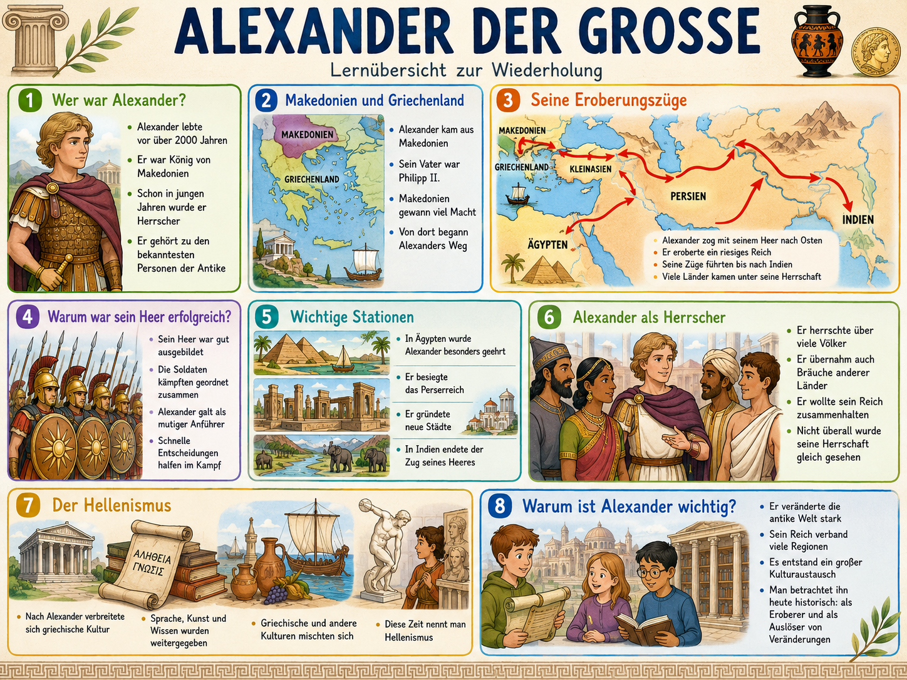
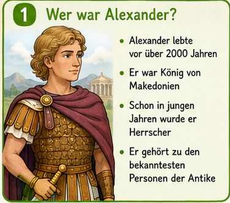

Alexander baute in kurzer Zeit ein riesiges Reich auf. Dieses Modul zeigt nicht nur seine
Eroberungen, sondern auch Folgen: kulturellen Austausch im Hellenismus, neue Staedte,
aber auch Gewalt, Widerstand und Konflikte.

Leitgrafik des Moduls. Die Lernreise arbeitet mit einzelnen Box-Ausschnitten als Stationen.
Didaktischer Kompass (Klasse 5)
Wir lernen Alexander nicht als Heldensage, sondern als historischen Fall: Wie konnte ein
junges Herrscherteam so weit kommen? Was passierte mit den eroberten Regionen? Und warum
ist der Hellenismus bis heute wichtig?
1. Ordnen
Wer war Alexander? Wo begann sein Weg?
2. Nachvollziehen
Eroberungszuege auf Karte und Zeitleiste verstehen.
3. Bewerten
Herrschaft als Mischung aus Erfolg, Zwang und Widerstand.
4. Uebertragen
Hellenismus als frueher Kulturkontakt-Raum.
Stationen-Explorer zur Grafik
Waehle eine Station. Du siehst den Bildausschnitt plus Erklaerung und Faktencheck.

Zeitleiste: 356 bis 323 v. Chr.
Diese Daten helfen dir beim Einordnen in Test und Klassenarbeit.
356 v. Chr.
Geburt in Pella (Makedonien).
336 v. Chr.
Alexander wird mit 20 Jahren Koenig von Makedonien.
334 v. Chr.
Sieg am Granikos: Beginn des grossen Asienfeldzugs.